Code actions¶
Code actions is a feature in the VS Code Editor that enables quick fixes and code refactoring suggestions. The Ballerina VS Code extension enables the following code actions.
Quick fixes¶
Quick fixes are suggested based on the diagnostics displayed at a given cursor position. The Ballerina VS Code extension provides a wide range of quick fixes to such diagnostics.
Variable assignment¶
The following code actions are available as quick fixes when the Variable assignment required diagnostic is identified in your code.
| Code action | Description |
|---|---|
Create variable |
Create a variable for an expression. |
Create variable and type guard |
Create a type guard to handle the error gracefully. |
Create variable and check error |
Add a check expression. |
Ignore return value |
Ignore the return value of a function call or a method call with _. |
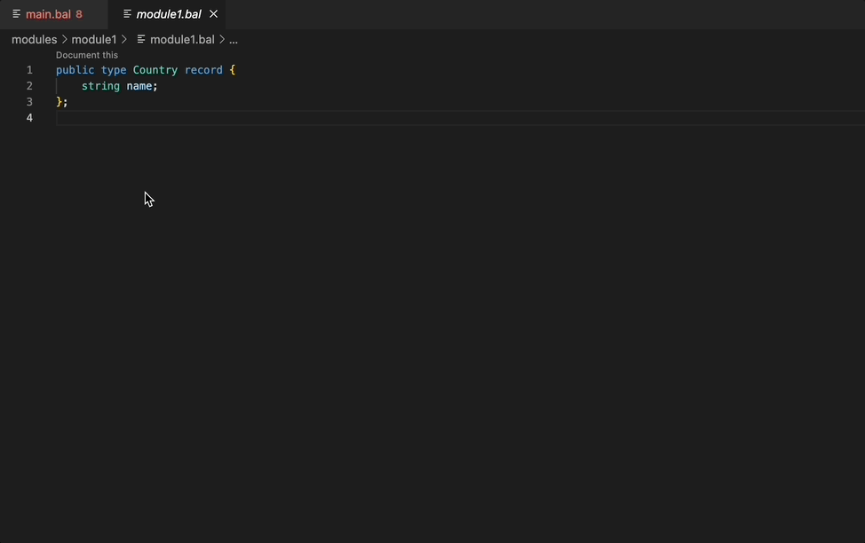
Type inference¶
The following quick fixes are available for type inference.
| Code action | Description |
|---|---|
Create variable with type |
Create a variable for a remote method expression in which the Cannot infer the 'typedesc' argument for parameter diagnostic is present. |
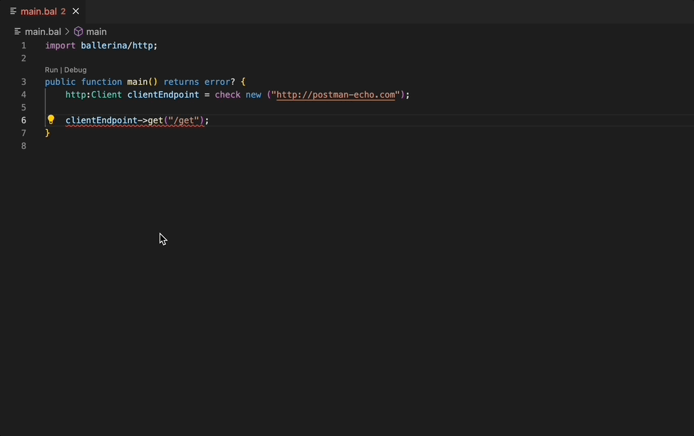
Missing check expressions¶
The following quick fixes are available for missing check expressions.
| Code action | Description |
|---|---|
Add 'check' error |
Add the check keyword when the selected expression's type is a subtype of error or a union with an error member while the expected type doesn't contain an error. |
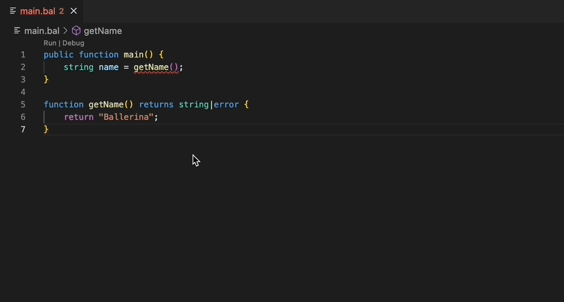
Check expressions¶
The following quick fixes are available for check expressions.
| Code action | Description |
|---|---|
Surround with do/on-fail |
Surround a check expression with a do/on-fail clause. |
Change return type to 'error?' |
Change the return type of a function/method to error?. |
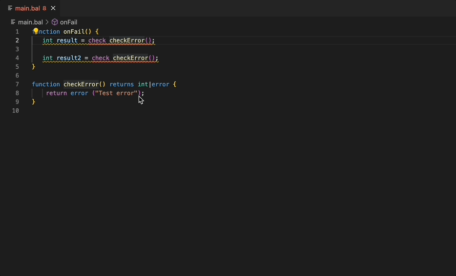
Imports¶
The following quick fixes are available for imports.
| Code action | Description |
|---|---|
Import module |
Add the import statement for a module that has a reference without an import statement. |
Pull unresolved module |
Pull one or more Ballerina packages (which are imported in the source and are unavailable locally) from Ballerina central. |
Remove import |
Remove an unused or re-declared module import. |
Remove all unused imports |
Remove all unused imports except when there is a re-declared import statement. |
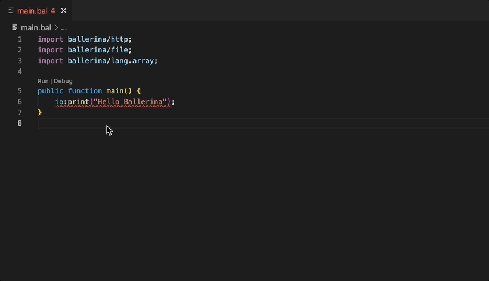
Documentation¶
The following quick fixes are available for documentation.
| Code action | Description |
|---|---|
Document this |
Add the documentation to the closest node that can be documented clause. |
Update documentation |
Update the existing documentation when parameters are missing or not documented. This depends on the warning diagnostics issued by the compiler. |
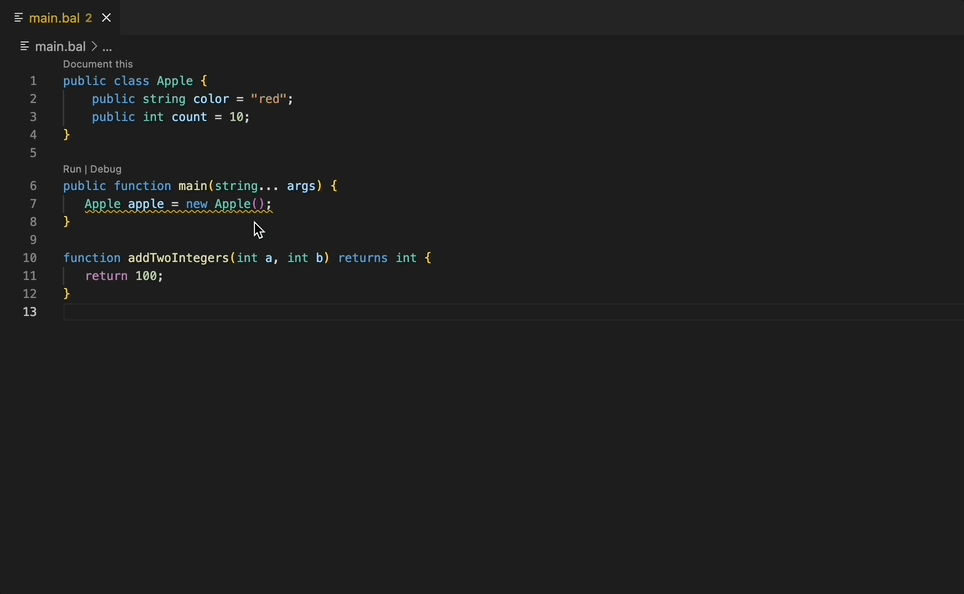
Incompatible types¶
The following quick fixes are available for incompatible types.
| Code action | Description |
|---|---|
Change variable type |
Change the type of variable. |
Add type cast |
Add a type cast for the incompatible type. |
Change return type |
Change the incompatible return type of a function/method. |
Change parameter type |
Add a conditional default value for the incompatible type. |
Add conditional default value |
Ignore the return value of a function call or a method call with _. |
Convert to 'xml'/'string' template |
Convert a raw template into a subtype (xml or string). |
Add type cast for numeric expressions |
Add a type cast for an unsupported numeric expression. |
The Change variable type, Change parameter type, Add type cast, and Change return type quick fixes are demonstrated below.
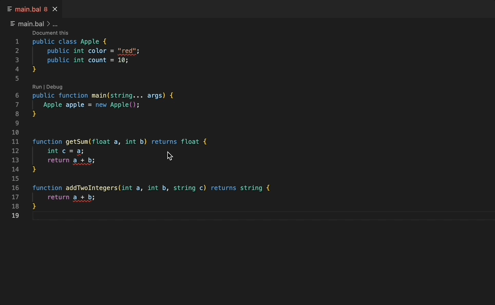
The Add conditional default value and Convert to 'xml'/'string' template quick fixes are demonstrated below.
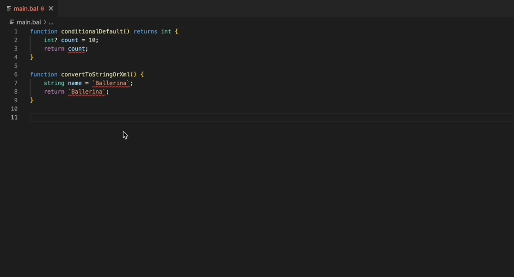
Functions¶
The following quick fixes are available for creating functions.
| Code action | Description |
|---|---|
Create function |
Create a function when there's an undefined function invoked by a function call expression. |
Implement method |
Implement an unimplemented method declared by an included object type. |
Implement all |
Implement all the methods declared by an included object type. |
Add explicit return statement |
Add an explicit return statement to a function. |
Convert to public function |
Add a public access modifier to a function definition. |
Add isolated qualifier |
Add an isolated qualifier to a function. |
The Create function, Implement method, and Implement all quick fixes are demonstrated below.
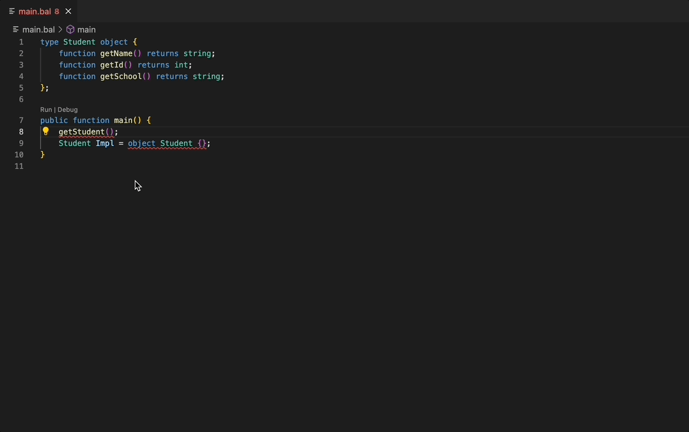
The Add explicit return statement, Convert to public function, and Add isolated qualifier quick fixes are demonstrated below.
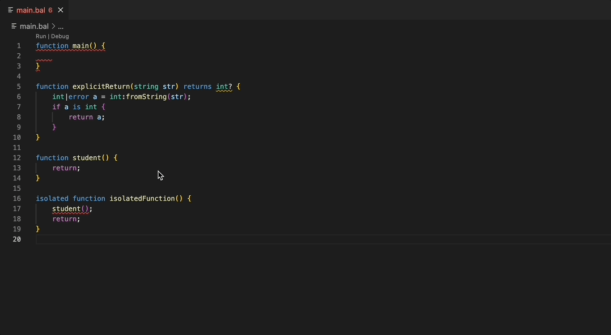
Records¶
The following quick fixes are available for records.
| Code action | Description |
|---|---|
Create record |
Create a record for an unknown type clause. |
Fill record fields |
Add missing record fields to a mapping constructor expression. |
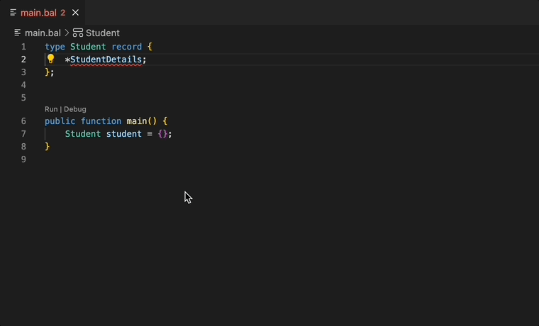
Annotations¶
The following quick fixes are available for annotations.
| Code action | Description |
|---|---|
Convert to constant |
Convert an annotation declaration to a constant annotation declaration clause. |
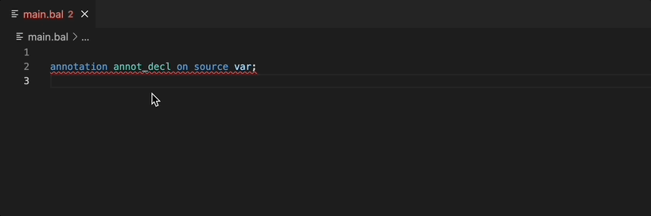
Other quick fixes¶
| Code action | Description |
|---|---|
Convert to readonly clone |
Convert an e expression to e.cloneReadOnly(). |
Ignore unused variable |
Ignore an unused variable. |
Make construct pubic |
Make a construct public where the attempt to expose non-public symbol warning is present. |
Convert module variable to listener declaration |
Convert a module var declaration statement to a listener declaration. |
Remove unreachable code |
Remove unreachable statements. |
The Convert to readonly clone, Ignore unused variable, and Remove unreachable code quick fixes are demonstrated below.
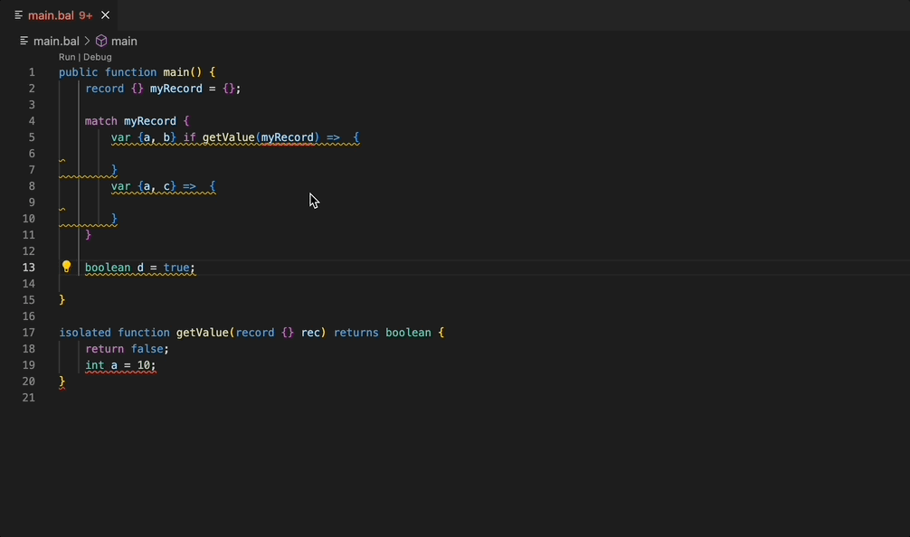
The Make construct public quick fix is demonstrated below.
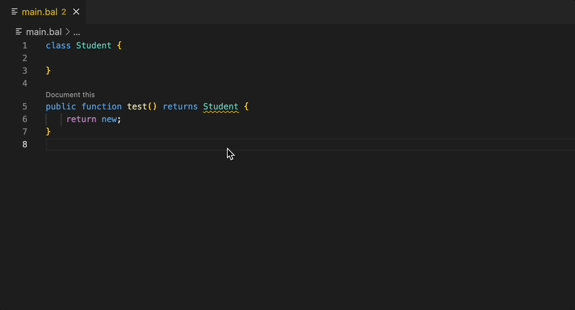
The Convert module variable to listener declaration quick fix is demonstrated below.
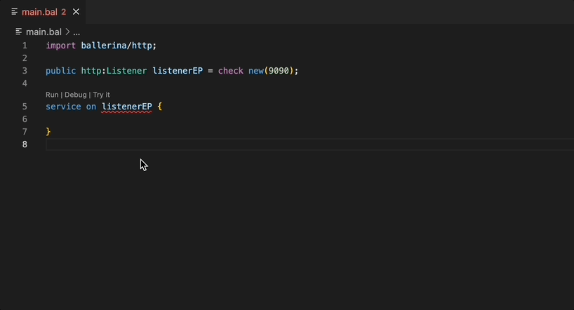
Refactoring actions¶
Refactoring actions are suggested when the existing code can be rearranged or restructured to improve the quality and maintainability of your code while ensuring that the overall behavior of the code remains unaffected.
Extract to code actions¶
The following refactoring actions are available for extracting expressions.
| Code action | Description |
|---|---|
Extract to constant |
Extract a constant expression to a constant. |
Extract to function |
Extract an expression or a statement to a function. |
Extract to local variable |
Extract an expression to a local variable. |
Extract type |
Extract anonymous records to record types. |
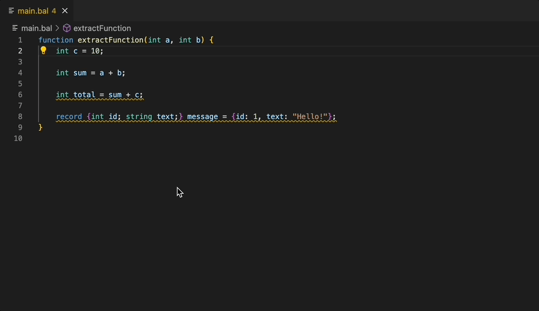
Rewrite code actions¶
The following refactoring actions are available as rewrite actions.
| Code action | Description |
|---|---|
Map with a query expression |
When both the right-hand side (RHS) and left-hand side (LHS) types are array types, convert the RHS to a query expression. You can modify the query expression with additional clauses and mappings later. |
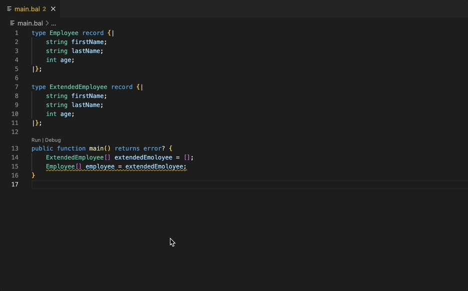
Source actions¶
Source actions are used to generate common code structures and recurring elements.
Generate getters and setters¶
The following source actions are available for generating getters and setters.
| Code action | Description |
|---|---|
Create a getter |
Generate a getter for class-level variables. |
Create a setter |
Generate a setter for class-level variables. |
Create getter and setter |
Generate both getter and setter for class-level variables. |
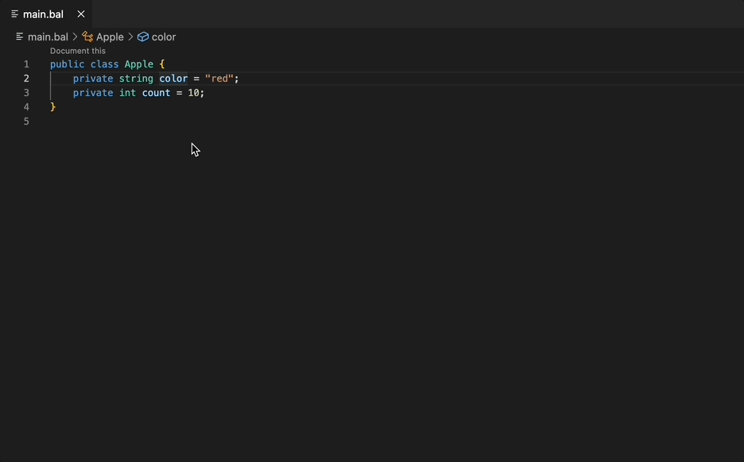
Variables¶
The following source actions are available for variables.
| Code action | Description |
|---|---|
Type guard variable |
Type guard a variable if the variable type is a union type. |
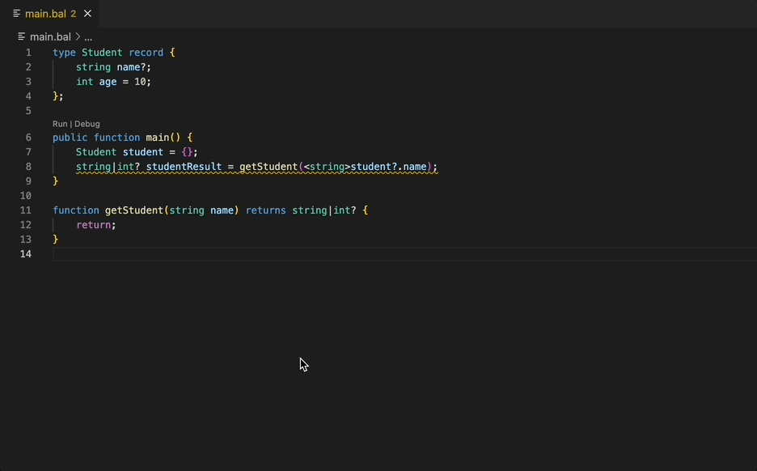
Imports¶
The following source actions are available for imports.
| Code action | Description |
|---|---|
Optimize imports |
Optimize import statements to remove unused imports and arrange imports in alphabetical order. |
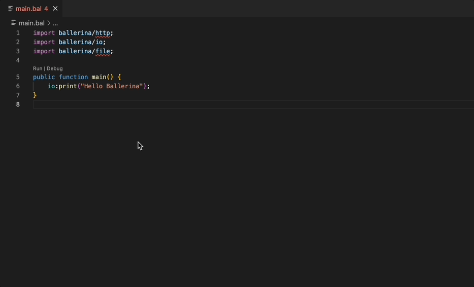
Documentation¶
The following source actions are available for documentations.
| Code action | Description |
|---|---|
Document all |
Document all the top-level constructs. |
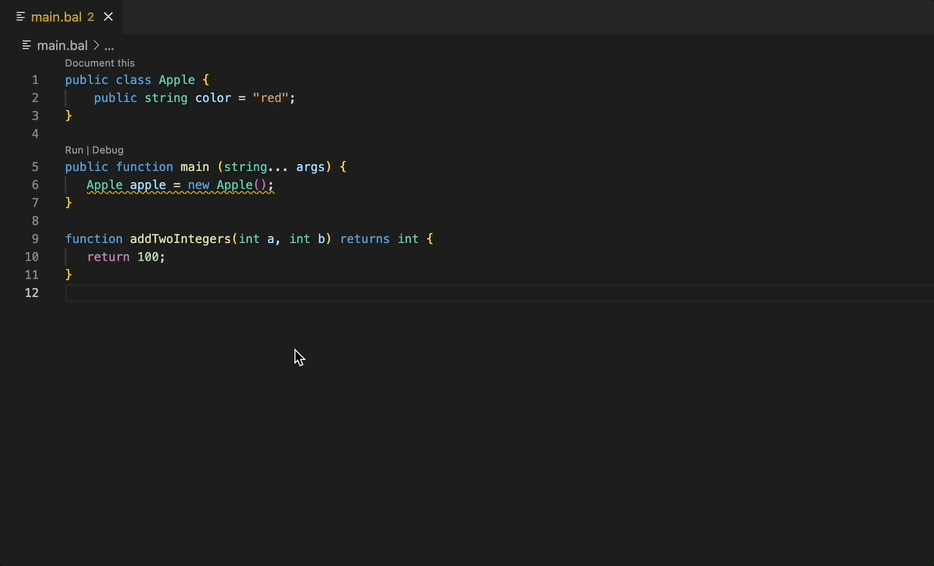
Top